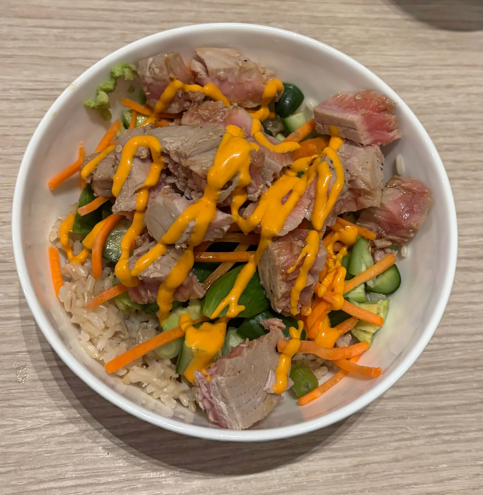

Home
Tuna poke bowl

Ingredients
- Ahi Tuna
- Rice
- Mini cucumbers
- Green onions
- Matchstick carrots
- Spicy Mayo
- Sweet Rice vineager
Ingredients for tuna sauce
- 2 parts soy sauce
- 1 part (not sweet) rice vineager
- 1 part sesame oil
- 1 part honey
Steps
- Cook the rice according to instructions
- Sear ahi tuna according to instructions and combine ingredients for tuna sauce
- Cut up mini cucumbers and green onions and tuna
- Add a little sweet rice vinegar to the rice
- Pour sauce over the tuna and add all ingredients into a bowl